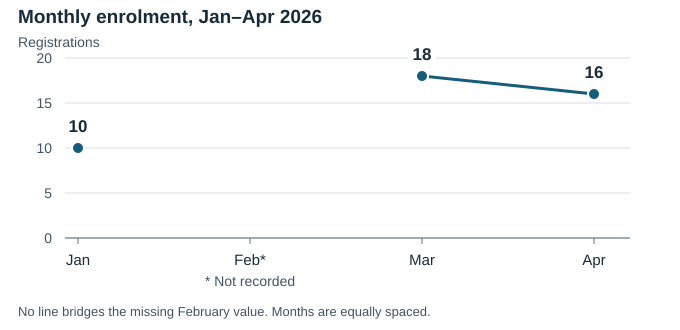

2026 · Course-option lookup
Compare course options
Use the table for exact hours, fees, delivery and status. Field practice remains provisional; its fee has not yet been set.
| Course | Planned hours | Fee (USD) | Delivery | Status |
|---|---|---|---|---|
| Foundations | 12 | 0 | In person | Confirmed |
| Field practice | 24 | Not set1 | Blended | Provisional; fee not yet set |
| Maintenance | 18 | 75 | In person | Confirmed |
1 · Not set: The source fee is null (not recorded); the course status specifies that the fee is not yet set. It is not a zero fee.
Units: Hours are planned instructional hours. All fees are in USD; source precision is preserved.
Value key: 0 is a recorded zero. Null means not recorded, not zero. No not-applicable or suppressed values are supplied.
Source: Synthetic curriculum and enrolment register, 2026; not real participant data.
January–April 2026 · Monthly enrolment
The monthly record has a gap
Registrations were 10 in January, 18 in March and 16 in April. February was not recorded, so a continuous four-month trend cannot be established.

| Month (2026) | Registrations |
|---|---|
| January | 10 |
| February | Not recorded2 |
| March | 18 |
| April | 16 |
2 · Not recorded: February is null in the source, not zero. No uncertainty intervals or unique-participant counts were supplied. No total or completion rate is inferred.
Source: Synthetic curriculum and enrolment register, 2026; not real participant data.